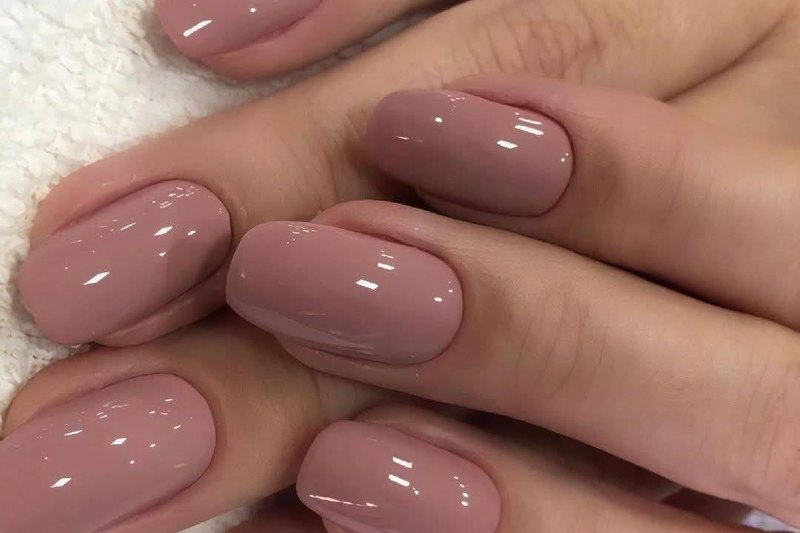
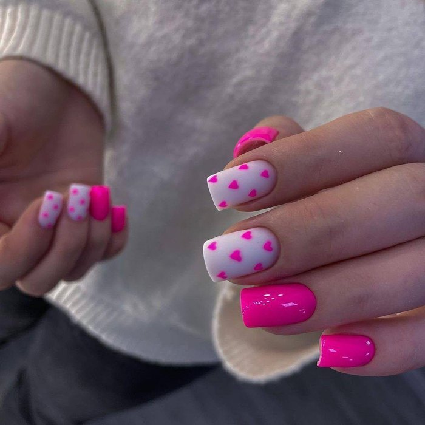
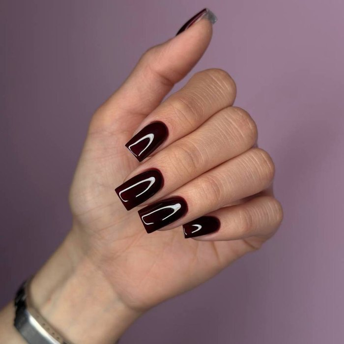
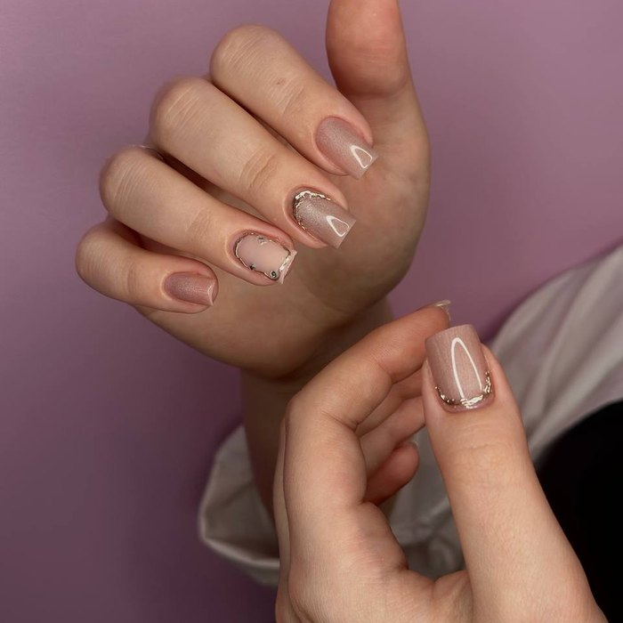
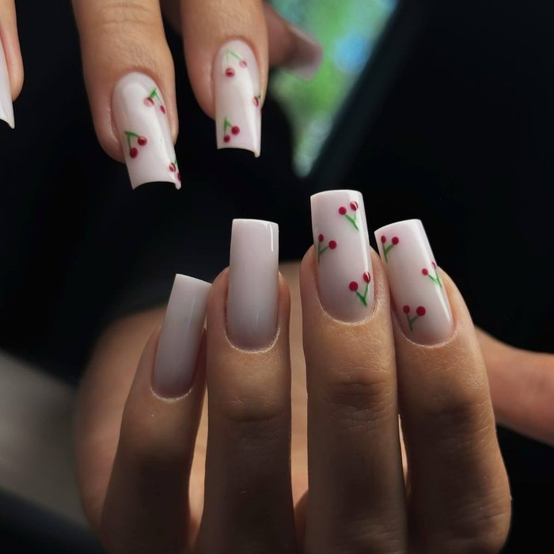

Покрытие гель-лак
Стойкое и аккуратное покрытие, которое сохраняет глянец и цвет до 3–4 недель. Подбираем оттенок под ваш образ из палитры более чем 200 цветов и снимаем покрытие бережно, без спиливания и травмы ногтя.
Записаться на гель-лак
Как проходит
Этапы процедуры
- Подготовка. Дезинфекция рук и инструментов, обработка кутикулы, придание формы.
- Базовое покрытие. Наносим укрепляющую базу и просушиваем в лампе.
- Цвет. Два тонких слоя выбранного оттенка с полимеризацией каждого слоя.
- Финиш и уход. Топ для глянца, масло для кутикулы и рекомендации по уходу.
| Вариант | Что входит | Цена |
|---|---|---|
| Однотонное покрытие | Маникюр + база, цвет, топ | 3200 ₽ |
| Френч / градиент | Покрытие + плавный переход или линия улыбки | 3800 ₽ |
| Дизайн с декором | Покрытие + роспись, втирка, стразы (2–4 ногтя) | от 4400 ₽ |
| Снятие чужого покрытия | Бережное снятие + восстановление | 750 ₽ |
Видео
Как это выглядит
Результаты
Гель-лак в работах



